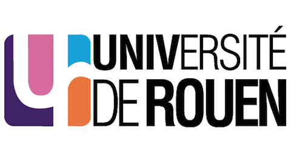
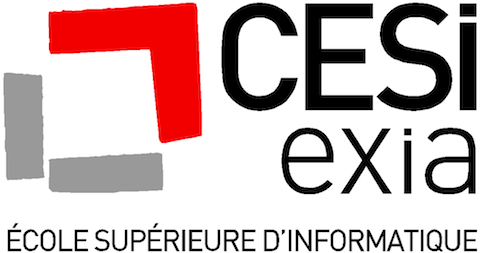
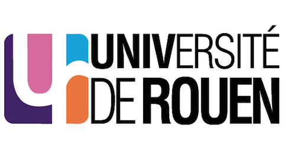
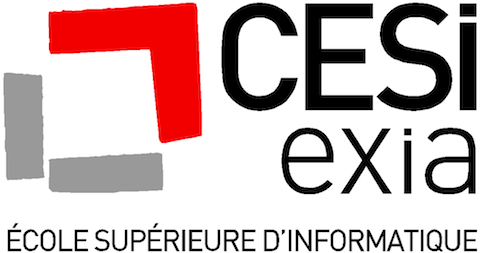
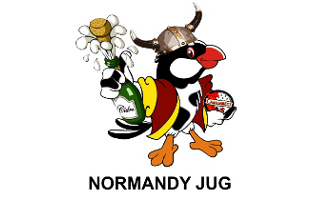
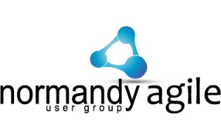
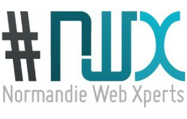

Jeudi 17 octobre 2013 à Rouen
Codeurs en Seine est une conférence gratuite qui se déroule à Rouen, sur 3 thèmes en simultané : le Java, l'Agile, le Web. Vous pourrez défricher des sujets comme les bases de données NoSQL, le JS natif, les tests utilisateurs, le continuous delivering et tout se qui tourne autour du cloud.
Rendez-vous dans les locaux de l'Université de Rouen, UFR de science et technique, avenue de l'université à Saint-Étienne-du-Rouvray. Les conférences se tiendront toute la journée 8h30 à 18h30. 6 sessions, entrecoupées de pauses gastronomiques, se tiendront par salle
 



Accéder à l'Université de Rouen
Organisateurs
Normandy Java User Group, Normandy Agile User Group et Normandie Web Xperts mettent à profit leur expérience et leurs contacts pour proposer un événement unique sur les bords de Seine. Leur volonté est de réunir sur une journée les codeurs d'ici et d'ailleurs afin qu'ils partagent leurs connaissances.
-

-

-

Inscriptions
Intervenants
Plénière
Pierre Pezziardi : entrepreneur, cofondateur du cabinet de conseil OCTO Technology, cofondateur de l’Université du SI, fondateur d’OpenCBS Microfinance, créateur de NotreBanque, auteur, conférencier, il promeus l’idée d’Informatique Conviviale : des systèmes destinés à décloisonner les organisations et à rendre leur autonomie aux équipes.
Web
Laurent Demontiers : Web Consultant-AMOA-UX / Startuper / Teacher / Speaker / Organisateur des Rencontres Interactives de Caen / Dans l'écosystème web depuis 1997.
Matthias Dugué : Consultant/Développeur aujourd'hui chez Clever Age, il parcours la toile sans relâche, à la recherche de l'élixir de qualité, de la pierre d'innovation, et de la poudre d'accessibilité. D'un optimisme sans faille, il poursuit inlassablement sa quête au côté d'autres valeureux compagnons, pour libérer le web de ses démons…
Agile
David Gageot : développeur indépendant. Ma passion ? L'écriture de logiciels pointus mais simples. J'ai pour leitmotiv d'être un facilitateur qui, par ma créativité et mon expertise, aide les équipes à être plus innovantes et plus efficaces. Depuis 2010, j'ai pris le leadership sur le projet open-source Infinitest. Un plugin pour Eclipse et IntelliJ qui permet, après chaque changement de code, de jouer les tests unitaires potentiellement impactés.
Frédéric Menou : Développeur Java et désormais développeur Ruby chez Capitaine Train, également "formateur git", Frédéric accompagne les développeurs sur le chemin du Clean Code. Il est également Bagger sur la région parisienne (brownbaglunch.fr).
Jean Laurent de Morlhon : CTO @ Xebia Studio, Mr FooBarQix @ CodeStory, adore développer simplement & intelligement avec des développeurs passionnés. Fidèle défenseur du développeur, explore le mouvement Software Craftsmanship.
Pascal Van Cauwenberghe : Pascal Van Cauwenberghe est un consultant basé à Bruxelles qui essaie de résoudre plus de problèmes qu’il n’en crée. Pour cela il utilise des méthodes issues de l’agile, du Lean, de la théorie des contraintes, du Systems Thinking notamment. Il est un des fondateurs du groupe XP en Belgique et un des organisateurs des XP Days Benelux. Un jour, Vera Peeters et lui ont inventé le “XP Game“, parce qu’ils ne réussissaient pas à expliquer XP. Ils ont appris que le jeu est un moyen idéal pour apprendre.
Java
Antonio Goncalves : Antonio is a senior software architect specialized in Java/Java EE. As a consultant he advises customers in France and help them in defining their software architecture. Antonio is also the founder of the very successful Paris JUG and independent JCP member on JEE6 (JSR 316), JPA 2.0 (JSR 317) and EJB 3.1 (JSR 318). Based on all his experiences, he has written two books about Java EE 5 and recently on Java EE 6 with Glassfish. It explains, in a practical way, how to develop an application using most of the Java EE specifications.

José Paumard : maître de conférences à l'institut Galilée (université Paris 13) et docteur en mathématiques appliquées de l'ENS de Cachan. Il découvre Java en 1995, et enseigne le langage et ses API depuis 2000 en DESS (devenu M2 depuis). Il y a 10 ans, José rencontre Pierre Briant et se passionne depuis pour les bases de données historiques et archéologiques. Il codirige dans ce cadre le projet MAVI en collaboration avec le collège de France, et publie en open source Open melodie plateforme Java qui joue le rôle de back-office du MAVI. Il tient le blog Java le soir.
Nicolas De Loof : Senior Engineer chez CloudBees, après avoir été Architecte Java pour de grandes SSII françaises. Techno-veilleur et développeur open-source, il a rejoint l’équipe de développement Maven en 2007, en particulier pour le support de GWT. Avec 15 ans d’expérience en développement dans ses bagages et de nombreuses relations dans la communauté Java, il anime depuis 2008 le BreizhJUG, groupe d’utilisateur Java Rennais. Il a participé à plusieurs conférences sur le thème de la forge logicielle et contribue activement au microcosme Java.
Sponsors
Sponsor Platinium
Conseiller, concevoir, développer, intégrer, maintenir, … Chez ses clients ou dans son centre de services, Proxiad Axe Seine et ses 70 consultants accompagnent l’évolution et la transformation des systèmes d’informations.
Après avoir soutenu l'Agile Tour pendant 3 ans, Proxiad est notre premier sponsor.
Devenir Sponsor ?
Nous sommes en train de contacter les sponsors potentiels, si vous n'avez pas été contacté et que vous souhaitez sponsoriser la conférence vous pouvez consulter la plaquette et convention de sponsoring.
Partenaires
-
Soutien local du Master GIL (Génie de l'Informatique Logicielle) :
-
Soutien en communication de l'Exia Cesi :
Nous Contacter
Email : contact@codeursenseine.com
Twitter : @codeursenseine
Facebook : Page Codeurs En Seine